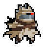
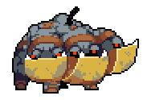
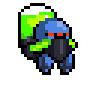
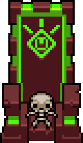

There are a ton of different enemies in Nuclear Throne. They range from standard wasteland bandits all the way to dogs made of pure energy. There is even a throne that is nuclear to fight in the game.
The Desert
The first location in the game is the desert. The wind hurts. There are five different enemies that show up.
Bandit
The bandit is the regular mook enemy. He is weak and is easy to doge his projectiles. The bandit tends to shoot more when there are more in the same area. A hit from a bullet will cost you three health.
topScorpion
The scorpion is an erratic enemy. Their movement is very fast and when you get in their line of sight, they will spray poison at you in the form of a fast moving projectile. The projectile if you get hit will cost you two health points. If you touch the scorpion it will cost you five health points. There is a variant of the Scorpion, the Golden Scorpion. This one acts the same as the standard scorpion except when they shoot their poison it comes in two waves, one is shot very fast while the other is signifigantly slower. Another difference is that the Golden Scorpion will explode into poinson projectiles when they are killed.
topMaggot
The maggot comes in two forms, the first is a giant maggot that can burrow into the ground and travel under the ground to the player. When the giant maggot is killed it explodes into four or five smaller maggots. They do not burrow, but they will follow the player trying to attack it. The Maggot does not have any projectiles and a hit from them will take one health point.
topBig Bandit
Big Bandit is the first boss of the game. On level 1-3 he will appear after killing 1/4 of the enemies in the level. Big Bandit has two attacks, the first is a flurry of bullets fired at the player. Each hit takes three health points. The second attack is if you break line of sight he will rush towards the player breaking down any walls in the way. If Big Bandit touches you while he is attacking, that will be the end of your run.
topThe Sewer
The second location is of course the sewers, because it's not a video game if there is no sewer level. The sewer is one stage only.
Rats
Rats come in three different varietys. Two types of Rats have the same behaviour the run erraticly towards the player. If the player is touched by a rat they are hit for two health points. There also is the Big Green Rat, who produces small green rats that act the same as regular rats. Once the Big Green Rat produces four groups of small green rats it will charge the player the same way that Big Bandit does.
topBallguy
Ballguy is a frog who walks towards the player character, if they get close enough Ballguy will explode damaging the player for two health points. If the player kills Ballguy he still explodes their poison projectile. A variant of Ballguy is Toxic Ballguy. Toxic Ballguy walks around with a cloud of poison projectiles radiating from them at regular intervals.
topAlligator
There are two types of Alligators. The regular Alligator and the Buff Alligator (more commonly known as the Buff Gator). The Alligator will hide around corners from the player and if they get in his line of sight he will fire a fast porjectile at them. The Buff Gator is much the same except he will fire a flak shot that explodes into several more projectiles in a radius around the original projectile.
topAssassin
The assasin is one of the most deadly enemies in the game. He will "play dead" until the player gets near him, at which point he will wake up. He will run very quickly towards the player in an erratic pattern that is difficult to track. The Assasin carrys a big stick, when he gets in range of the player he will swing the stick very fast. If the player is hit they will lose four health points.
topThe Scrapyard
The scrapyard, a place of 1000 deaths. Protected by a Cerberus like guard dog.
Raven
The Raven is a cowardly enemy, taking flight and landing out of reach of the player. When the Raven does shoot it is in a volley of three shots each of which hit the player for three health points.
topSniper
The Sniper is a robotic enemy who perfect aim. If the player gets into the sight of the sniper he will aim and take his shot after just a few seconds. Beware of his laser sight and the tell tale sound of the laser starting up. His projectile hits you for three hit points. You had better stay away from the sniper when killing him as well. On death the Sniper produces a massive explosion. The explosion can take anywhere between five and ten health points.
topFire Salamander
The Fire Salamander is long and black with bright red eyes. When he sees the player he will blow a massive spray of fire in a radius around it's body. The fire hits for 2 health points.
topBig Dog
Big Dog is the second boss of the game. He is a massive three headed dog. When you first enter the stage he is sleeping. If you get too close Big Dog will wake up and the boss fight is started. Big Dog has two methods of attack. The first is a spinning attack where he sends waves of bullets in a radius around his bogy. The bullets hit for three damage. Along with the bullets in his spin he also sends after the player homing missles. The missles follow the player and once they connect with the player or anything else on the stage they explode, for between five and ten damage. When Big Dog is killed he explodes massively, taking up large portions of the level. This explosion has been responsible for many player deaths.
topThe Crystal Caves
Welcome to the mid point of the game. The Crystal Caves are a dangerous area filled with deadly crystals. A lot of the floor is covered in cobwebs that will slow you down to about 50% of your normal walking speed. The crystal caves are dark, you can only see a small circumference around the player.
Crystal Spider
The Crystal Spider is fast. They run towards the player similar to the rats, but they are many times faster. On cantact with the player they hit for three health points. Unlike the player the Crystal Spider is not slowed by walking over the cobwebs.
topLaser Crystal
The Laser Crystal is a diamond shaped enemy, who upon seeing the player fires a few shots of a laser at them. If the crystal is not in sight the only way to tell if you are in the path of the laser is you can see the air heating up around you. The laser hits you for 1 health point per hit. Each laser beam can hit you up to two times. the Crystal Laser also hits for 20 health points on touch, instantly killing all the characters.
topFrozen City
The Frozen City is the bane of my Nuclear Throne experience. It has a variety of different enemies who do a lot of damage. Living up to its name the Frozen City has patches of ice making the player slip and slide all over the place. The Frozen city is littered with abandoned cars. These cars are susceptible to explosions after too many hits with a gun.
topSnow Bandit
The snow bandit is very similar to the bandits we see in the desert. Instead of wearing brown and grey clothes they have a red scarf and jacket. The Snow Bandit has more health than the desert Bandit. They sometimes hide in a snowman. Their bullets still hit for three health points.
topRobot Wolf
The robot wolf is dangerous. When the Robot Wolf sees the player they roll into a ball and attack the player by firing three bullets in a spread pattern at the player. The bullets hit for three damage each. The Robot Wolf also does two damage on contact. On death they do not drop any pickups for the player.
topSnowbot
The Snowbot is pretty unassuming. They walk around seemingly not paying attention to the player. Then with little warning the Snowbot will charge the player. They are very fast. When charging if they touch the player they hit for four health points. The Snowbot will also pick up any cars that is comes across. If they see the player they will throw the car at them. The car is thrown at a very high rate of speed, almost impossible to dodge. Getting hit by the car almost certainly means instant death as it explodes on contact.
topSnow Tank
The Snow Tank comes in two varietys, the Golden Snow Tank and the regular Snow Tank. The Snow Tanks acts similar to the Laser Crystal. It walks around the stage with no apparent goal. When it sees the player it will fire two streams of bullets that widen into a V shape. You are able to tell if the Snow Tank is about to fire at the player when you see the red laser sight. The Golden Snow Tank is a tougher variant. When they see the player they instantly begin shooting at the player. When it shoots it also fires a missle. The Snow Tank will explode shortly after death.
topLil' Hunter
Lil' Hunter is the boss of the Frozen City. He is a maniac with a jet pack. He will repeadedly fly high in the air and land near you, taking out any structures that are in the area. When he lands a cloud of blue flames bursts out all around him. Lil' Hunter has two weapons, a fast shooting shotgun that is fairly accurate and a shotgun that shoots bouncing shells. The bullets hit for three damage each. He can also call in the I.D.P.D the police of the world of Nuclear Throne. They will enter via a portal. When Lil' Hunter dies his jetpack will explode throwing him all over the place with his stopping point being a large explosion.
topThe Labs
The labs are the final single stage level in Nuclear Throne. They are filled with narrow corridors and enemies.
topFreak
The Freak is an enemy that comes in large numbers. They run directly as the player with little regard for anything else. They are a melee enemy and they do three damage on touch.
topExplo Freak
The Explo Freak looks like a mutated plant. It acts just like the Freak, running straight for the player. When they get into range they will explode doing enough damage to kill almost any player.
topRhino Freak
The Rhino Freak is huge, like half-man, half-rhino. They move slow, but when they touch the player they do five damage. They may not seem too dangerous, but with their high damage and high health they are definately a threat.
topNecromancer
The Necromancer is annoying. He has the ability to revive Freaks. He can also turn any destroyed objects or killed enemies into Freaks. This creates the massive amount of enemies that can be found in the level if you are haing a hard time finding the Necromancer. The Necromancer does not damage the player.
topThe Palace
The Palace is the final location in the game. It is filled with enemies made of pure energy. There is only two stages to the Palace before going on to fight the final boss.
topGuardian
The Guardian is humanoid in shape but kind of looks like a green fire. They can teleport around the stage. Their projectile is three orbs of green energy. The orbs hit for three damage, while if you touch the Guardian it will hit you for two. If the Guardian is near a wall they will destroy a small section of it on death.
topExplo Guardian
The Explo Guardian is another being that looks kind of like green fire. They travel through the level and when they see the player they will crouch down preparing to fire super fast projectiles in every direction. If you kill them before they shoot their projectiles will be signifigantly slower. The projectiles and touch hurt the player for two health points.
topDog Guardian
The Dog Guardian is a very tough enemy. They wander slowly through the level, but when they see the player they may want to "play" jumping towards the player across very long distances. When jumping if they touch a wall they will destroy it. If they touch the player, they are also destroyed, the Dog Guardian hits for a massive six health points.
topThe Nuclear Throne
The actual throne of the title Nuclear Throne is the final boss. It is a massive throne that spreads across the entire width of the stage. To activate the Throne you must first attempt to sit on it. When that is unsuccessful shooting the throne will activate it. The Throne will grow six legs that give it mobility. It takes a short while for the Trone to be ready to fight, but when it is you better be prepared. First it shoots a massive laser down the middle of the stage. Afterwards it will walk towards you firing projectiles in a simple pattern. With contact the Nuclear Throne will hit you for ten health points killing any player that does not have any health upgrades. The Nuclear Throne will fire massive orbs at the player, and when they stop travelling they explode into four groups of seven orbs. The large orb hits for 12 damage and the smaller on hits for five. When the Nuclear Throne is killed there is an explosion that shakes the entire screen. Once defeated the player is now able to sit on the throne as the ruler of the wasteland.
top